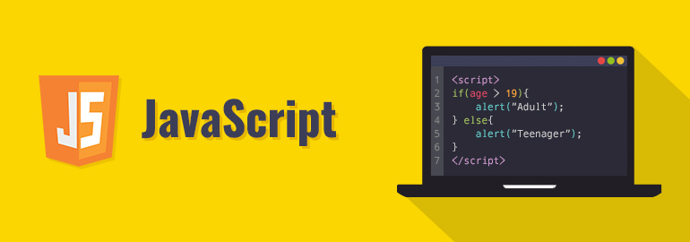

JavaScript (/ˈdʒɑːvɑːˌskrɪpt/; аббр. JS /ˈdʒeɪ.ɛs./) — мультипарадигменный язык программирования. Поддерживает объектно-ориентированный, императивный и функциональный стили. Является реализацией спецификации ECMAScript (стандарт ECMA-262[8]). JavaScript обычно используется как встраиваемый язык для программного доступа к объектам приложений. Наиболее широкое применение находит в браузерах как язык сценариев для придания интерактивности веб-страницам[9]. Основные архитектурные черты: динамическая типизация, слабая типизация, автоматическое управление памятью, прототипное программирование, функции как объекты первого класса. На JavaScript оказали влияние многие языки, при разработке была цель сделать язык похожим на Java. Языком JavaScript не владеет какая-либо компания или организация, что отличает его от ряда языков программирования, используемых в веб-разработке[~ 1][10]. Название «JavaScript» является зарегистрированным товарным знаком корпорации Oracle в США[11]. В 1992 году компания Nombas (впоследствии приобретённая Openwave[en]) начала разработку встраиваемого скриптового языка Cmm (Си-минус-минус), который, по замыслу разработчиков, должен был стать достаточно мощным, чтобы заменить макросы, сохраняя при этом схожесть с Си, чтобы разработчикам не составляло труда изучить его[12]. Главным отличием от Си была работа с памятью. В новом языке всё управление памятью осуществлялось автоматически: не было необходимости создавать буфера, объявлять переменные, осуществлять преобразование типов. В остальном языки сильно походили друг на друга: в частности, Cmm поддерживал стандартные функции и операторы Си[13]. Cmm был переименован в ScriptEase, поскольку исходное название звучало слишком негативно, а упоминание в нём Си «отпугивало» людей[12][14]. На основе этого языка был создан проприетарный продукт CEnvi. В конце ноября 1995 года Nombas разработала версию CEnvi, внедряемую в веб-страницы. Страницы, которые можно было изменять с помощью скриптового языка, получили название Espresso Pages — они демонстрировали использование скриптового языка для создания игры, проверки пользовательского ввода в формы и создания анимации. Espresso Pages позиционировались как демоверсия, призванная помочь представить, что случится, если в браузер будет внедрён язык Cmm. Работали они только в 16-битовом Netscape Navigator под управлением Windows[15]. Самая первая реализация JavaScript была создана Бренданом Эйхом (англ. Brendan Eich) в компании Netscape, и с тех пор обновляется, чтобы соответствовать ECMA-262 Edition 5 и более поздним версиям. Этот движок называется SpiderMonkey и реализован на языке C/C++. Движок Rhino создан Норрисом Бойдом (англ. Norris Boyd) и реализован на языке Java. Как и SpiderMonkey, Rhino соответствует ECMA-262 Edition 5.
Перед Бренданом Эйхом, нанятым в компанию Netscape 4 апреля 1995 года[17], была поставлена задача внедрить язык программирования Scheme или что-то похожее в браузер Netscape. Поскольку требования были размыты, Эйха перевели в группу, ответственную за серверные продукты, где он проработал месяц, занимаясь улучшением протокола HTTP[17]. В мае разработчик был переброшен обратно, в команду, занимающуюся клиентской частью (браузером), где он немедленно начал разрабатывать концепцию нового языка программирования. Менеджмент разработки браузера, включая Тома Пакина (англ. Tom Paquin), Михаэля Тоя[en], Рика Шелла (англ. Rick Schell), был убеждён, что Netscape должен поддерживать язык программирования, встраиваемый в HTML-код страницы[18].Помимо Брендана Эйха, в разработке участвовали[17] сооснователь[19] Netscape Communications Марк Андрессен и сооснователь Sun Microsystems Билл Джой: чтобы успеть закончить работы над языком к релизу браузера, компании заключили соглашение о сотрудничестве в разработке[20]. Они ставили перед собой цель обеспечить «язык для склеивания» составляющих частей веб-ресурса: изображений, плагинов, Java-апплетов, который был бы удобен для веб-дизайнеров и программистов, не обладающих высокой квалификацией[17]. Первоначально по предложению Марка Андрессена[21] язык был назван Mocha[22][23][24], был реализован Бренданом Эйхом в течение десяти дней и впервые был включен в пре-альфу версию Netscape 2[21]. Затем он был переименован в LiveScript[24][25] и предназначался как для программирования на стороне клиента, так и для программирования на стороне сервера (там он должен был называться LiveWire)[20]. На синтаксис оказали влияние языки Си и Java, и, поскольку Java в то время было модным словом[17][20], 4 декабря 1995 года LiveScript переименовали в JavaScript[26], получив соответствующую лицензию у Sun. Анонс JavaScript со стороны представителей Netscape и Sun состоялся накануне выпуска второй бета-версии Netscape Navigator[17]. В нём декларируется, что 28 лидирующих ИТ-компаний выразили намерение использовать в своих будущих продуктах JavaScript как объектный скриптовый язык с открытым стандартом[27]. В 1996 году компания Microsoft выпустила аналог языка JavaScript, названный JScript. Анонсирован этот язык был 18 июля 1996 года[28]. Первым браузером, поддерживающим эту реализацию, был InternetПо инициативе компании Netscape[29][30] была проведена стандартизация языка ассоциацией ECMA. Стандартизированная версия имеет название ECMAScript, описывается стандартом ECMA-262. Первой версии спецификации соответствовал JavaScript версии 1.1, а также языки JScript и ScriptEasy[12][20].
В статье «The World’s Most Misunderstood Programming Language Has Become the World’s Most Popular Programming Language»[31] (с англ. — «Самый неправильно понятый язык программирования в мире стал самым популярным в мире языком программирования») Дуглас Крокфорд утверждает, что лидирующую позицию JavaScript занял в связи с развитием AJAX, поскольку браузер стал превалирующей системой доставки приложений. Он также констатирует растущую популярность JavaScript, то, что этот язык встраивается в приложения, отмечает значимость языка. Согласно TIOBE Index, базирующемуся на данных поисковых систем Google, MSN, Yahoo!, Википедия и YouTube, в апреле 2015 года JavaScript находился на 6-м месте (год назад — на 9-м)[32]. По данным Black Duck Software[en][33], в разработке открытого программного обеспечения доля использования JavaScript росла. 36 % проектов, выпуски которых состоялись с августа 2008 по август 2009 года, включают JavaScript, наиболее часто используемый язык программирования с быстрорастущей популярностью. 80 % открытого программного обеспечения использует Си, C++, Java, Shell и JavaScript. При этом JavaScript — единственный из этих языков, чья доля использования увеличилась (более чем на 2 процента, если считать в строках кода)[34]. JavaScript является самым популярным языком программирования, используемым для разработки веб-приложений на стороне клиента[en][35][36].
В JavaScript доступ к отладчикам становится особенно полезным при разработке крупных нетривиальных программ из-за различий в реализациях разных браузеров (в частности, в отношении объектной модели документа). Во многих браузерах есть встроенный отладчик. Internet Explorer имеет три отладчика: Microsoft Visual Studio — самый полный из них, за ним следует Microsoft Script Editor[en] (компонент Microsoft Office[99]), и, наконец, свободный Microsoft Script Debugger, гораздо более простой, чем два других. Бесплатный Microsoft Visual Web Developer Express предоставляет ограниченную версию с отладочной функцией JavaScript в Microsoft Visual Studio. В восьмой версии в IE вместе с инструментами для разработчиков появился встроенный отладчик. В Opera также имеется собственный отладчик — Opera Dragonfly[100]. Разрабатываемые веб-приложения в Firefox можно отлаживать при помощи встроенных инструментов Firefox Developer Tools. В Safari входит отладчик JavaScript WebKit Web Inspector[101]. Этот же отладчик доступен и в других браузерах, использующих WebKit: Google Chrome, Arora, Rekonq, Midori и др.
Большинство фреймворков автоматизированного тестирования[en] JavaScript-кода предполагают запуск тестов в браузере. Это осуществляется при помощи HTML-страницы, являющейся контекстом тестирования[en], которая, в свою очередь загружает всё необходимое для осуществления тестирования. Первыми такими фреймворками были JsUnit[en] (создан в 2001 году), Selenium (создан в 2004 году)[102]. Альтернатива — запуск тестов из командной строки. В этом случае используются окружения, отличные от браузера, например, Rhino[103]. Одним из первых инструментов такого рода является Crosscheck, позволяющий тестировать код, эмулируя поведение Internet Explorer 6 и Firefox версий 1.0 и 1.5[104]. Другой пример фреймворка автоматизированного тестирования JavaScript-кода, не использующего браузер для запуска тестов — библиотека env.js, созданная Джоном Резигом. Она использует Rhino и при этом содержит эмуляцию окружения браузера и DOM[105]. Blue Ridge, плагин к фреймворку веб-приложений Ruby on Rails, позволяет осуществлять модульное тестирование JavaScript-кода как в браузере, так и вне его. Это достигается за счёт использования фреймворка автоматизированного тестирования Screw.Unit и Rhino с env.js[106]. Главная проблема систем тестирования, не использующих браузеры, в том, что они используют эмуляции, а не реальные окружения, в которых выполняется код. Это приводит к тому, что успешное прохождение тестов не гарантирует того, что код корректно отработает в браузере[107][108]. Проблемой систем тестирования, использующих браузер, является сложность работы с ними, необходимость осуществления рутинных неавтоматизированных действий[109]. Для решения этого JsTestDriver, фреймворк автоматизированного тестирования, разрабатываемый Google, использует сервер, взаимодействующий с браузерами для осуществления тестирования[110]. Сходным образом ведёт себя Selenium Remote Control, входящий во фреймворк автоматизированного тестирования Selenium: он включает в себя сервер, запускающий и завершающий браузеры и действующий как HTTP-прокси для запросов к ним[111]. Кроме того, в Selenium содержится Selenium Grid, позволяющий осуществлять одновременное тестирование JavaScript-кода на разных компьютерах с разными окружениями, уменьшая время выполнения тестов[112]. Testswarm, имеющее поддержку фреймворков автоматизированного тестирования JavaScript-кода QUnit (библиотека jQuery), UnitTestJS (библиотека Prototype), JSSpec (библиотека MooTools), JsUnit, Selenium и Dojo Objective Harness, представляет собой распределённое средство поддержки непрерывной интеграции[113]. Негативное свойство, которым может обладать фреймворк автоматизированного тестирования JavaScript-кода — наличие зависимостей. Это создаёт риск отказа в работе тестируемого кода, успешно проходящего тесты, в среде с отсутствием этих зависимостей. Например, исходная версия JsUnitTest, фреймворка, созданного и использовавшегося для тестирования библиотеки Prototype, зависела от самой Prototype, изменяющего свойства объектов в глобальной области видимости[114]. Включение в библиотеку JavaScript инструмента тестирования — распространённая практика. Так YUI Test 3 является частью Yahoo! UI Library и может быть безопасно использован для тестирования произвольного JavaScript-кода[115]. QUnit — фреймворк автоматизированного тестирования, созданный разработчиками jQuery[116].
